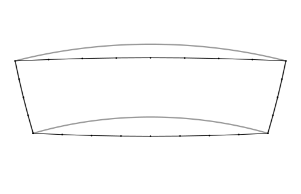

trianglewins / curves
Curves: bigcurve and s2
Triangles have straight edges, and so does every line a map draws. On the Earth, though, the edge between two longitude, latitude points is usually meant as a curve. This page is about that gap: what an edge "is", how s2 measures it, and how bigcurve draws it in a projection. It sits alongside Regular in what?, which asks the same kind of question about grids: regular, straight or curved only in some frame.
The page is also the vignette in bigcurve, which is not
on CRAN yet; install it with
install.packages("bigcurve", repos = c("https://hypertidy.r-universe.dev", "https://cloud.r-project.org")).
If you already use s2 (directly, or through sf, where it is the default for longitude and latitude data) you may wonder where bigcurve fits. The short answer: they agree on what a line between two points on the Earth is, and they answer different questions about it.
- s2 answers "what is this shape on the sphere, and how does it relate to other shapes?" Does it intersect, what is its area, what is the union, how far apart are these?
- bigcurve answers "how many points do I need to draw this shape in a given map projection so that it looks right, and no more?"
This page walks through the shared idea, where each package does its work, and how to use them together.
library(bigcurve)
library(s2)The shared idea: an edge is a great circle
Give a computer two points in longitude and latitude and ask for the line between them. There are two common answers.
- The planar answer: draw a straight line in longitude, latitude space, as if the coordinates were x and y on graph paper. This was what sf and GEOS did for years, and what most file formats quietly assume.
- The geodesic answer: follow the shortest path over the surface of the Earth, a great circle arc.
s2 takes the second answer for every edge, and so does bigcurve. Take a line along latitude 60 from longitude 0 to longitude 100. The planar middle of that line is (50, 60). The great circle middle is a long way north of it:
line <- s2_make_line(c(0, 100), c(60, 60))
s2_as_text(s2_interpolate_normalized(line, 0.5))
#> [1] "POINT (49.99999999999999 69.63942512488693)"
## how far is the planar middle from the true line, in metres?
s2_distance(s2_lnglat(50, 60), line)
#> [1] 1071857More than a thousand kilometres. Neither answer is wrong, they are two different shapes that happen to share their vertices. What matters is knowing which one your data means. s2 makes the geodesic reading the default; bigcurve assumes it.
bigcurve inserts its new vertices exactly on s2's arc. Densify the same line and ask s2 how far each new vertex is from the line:
d <- densify(segment(c(0, 100), c(60, 60)),
"+proj=laea +lon_0=50 +lat_0=60", tolerance = 1000)
nrow(d)
#> [1] 13
max(s2_distance(s2_lnglat(d[, 1], d[, 2]), line))
#> [1] 1.749256e-09A few nanometres, which is floating point noise. The added vertices change nothing about the shape on the sphere; they only make it explicit for a flat drawing.
Where the work happens
s2 does all its work on the sphere itself. Internally every point is a unit vector in three dimensions, and there is no map projection anywhere in sight. That is why s2 has no trouble at the poles or at the antimeridian: on a sphere there is no edge of the map to fall off.
bigcurve does its work in the plane of the map you are going
to draw. For each edge it projects the great circle midpoint
with PROJ and asks how far it lands from the straight chord between the
projected endpoints. If it is further than tolerance (in
the map's own units, usually metres) the edge is split and both halves
are checked again. This is the adaptive resampling that Mike Bostock
wrote for d3-geo.
That one difference explains most of what follows:
- A tolerance in bigcurve is "how far may the drawn line stray on the map". The default is about one part in 2048 of the map, roughly a pixel on a large plot.
- The same edge gets different numbers of vertices in different projections, because the curve is a different shape on each map. An edge that is straight in one projection gets no new vertices at all.
s <- segment(c(0, 100), c(60, 60))
c(laea = nrow(densify(s, "+proj=laea +lon_0=50 +lat_0=60", tolerance = 1000)),
stere = nrow(densify(s, "+proj=stere +lat_0=90", tolerance = 1000)),
merc = nrow(densify(s, "+proj=merc", tolerance = 1000)))
#> laea stere merc
#> 13 17 65Same shape, two readings
Here is a "box" written with four corners, from longitude 100 to 160 and latitude -35 to -20. As planar data its sides are parallels and meridians. As s2 (and bigcurve) read it, the north and south sides are great circles, and they bow away from the equator:
box <- s2_make_polygon(c(100, 160, 160, 100), c(-35, -35, -20, -20))
south <- s2_make_line(c(100, 160), c(-35, -35))
s2_as_text(s2_interpolate_normalized(south, 0.5))
#> [1] "POINT (130 -38.95657940063204)"Densify it for a map centred on Australia and draw both readings. Grey is the planar reading (sides along parallels and meridians), black is the geodesic reading with bigcurve's added vertices (the points).
prj <- "+proj=laea +lon_0=130 +lat_0=-30"
pool <- wkpool::establish_topology(wk::as_wkb(box))
dense <- densify(pool, prj)
## the planar reading: sides that follow parallels and meridians
lon <- seq(100, 160, by = 0.5)
planar <- rbind(cbind(lon, -35), cbind(160, seq(-35, -20, by = 0.5)),
cbind(rev(lon), -20), cbind(100, seq(-20, -35, by = -0.5)))
v <- wkpool::pool_vertices(dense)
seg <- wkpool::pool_segments(dense)
p0 <- rproj_xy(cbind(v$x, v$y)[match(seg$.vx0, v$.vx), ], prj)
p1 <- rproj_xy(cbind(v$x, v$y)[match(seg$.vx1, v$.vx), ], prj)
op <- par(mar = rep(0.5, 4))
plot(rbind(p0, p1), type = "n", asp = 1, axes = FALSE, xlab = "", ylab = "")
lines(rproj_xy(planar, prj), col = "grey60", lwd = 3)
segments(p0[, 1], p0[, 2], p1[, 1], p1[, 2], lwd = 1.5)
points(rproj_xy(cbind(v$x, v$y), prj), pch = 19, cex = 0.4)
par(op)The black shape is the one s2 measures when you ask for its area or test whether a point is inside. On this map, centred close to the box, the great circles are nearly straight, so the black outline is almost what you would get by joining the four corners; the parallels are what curve. On other maps the reverse is true, which is why bigcurve decides per projection. Drawing the grey shape while analysing the black one is how a map ends up disagreeing with its own analysis.
s2 can tessellate too
s2 is not blind to this problem. Its C++ library has an edge tessellator that turns geodesic edges into chains of straight edges in a projection, and the R package exposes it when it writes data out:
## geodesic edges, written as planar longitude, latitude within 1 km
txt <- s2_as_text(line, planar = TRUE, tessellate_tol_m = 1000)
length(wk::wk_vertices(wk::wkt(txt)))
#> [1] 63
## in s2's own Mercator projection
merc <- wk::wk_handle(line, wk::wkt_writer(),
s2_projection = s2_projection_mercator(),
s2_tessellate_tol = 1000 / s2_earth_radius_meters())
length(wk::wk_vertices(merc))
#> [1] 57
## bigcurve, for PROJ's Mercator, within 1 km on the map
nrow(densify(segment(c(0, 100), c(60, 60)), "+proj=merc", tolerance = 1000))
#> [1] 65The counts are similar, and that is the point: both packages are solving the same problem in the same spirit. The differences are practical.
| s2 tessellation | bigcurve | |
|---|---|---|
| Projections | plate carree, Mercator, orthographic | anything PROJ can do (laea, stere, any EPSG code, custom strings) |
| Tolerance measured | on the sphere (s2 takes metres and converts to an angle) | on the map, in the map's units |
| Output coordinates | projected (or planar longitude, latitude) | the input's longitude, latitude, so you can project with any tool afterwards |
| Input | s2 geography | matrices, segment meshes, wkpool topology (so any wk-readable data) |
| Other direction | yes: planar edges to geodesic on import
(planar = TRUE) |
no |
The "other direction" row deserves a sentence. If your data really are planar in longitude and latitude (a coastline digitised on a plate carree map, say), s2 can densify on the way in so that its geodesic edges follow the planar ones. bigcurve never does this. It always assumes the edges you hand it are great circles.
Using them together
Because both packages agree on what an edge is, a natural pipeline is s2 for the analysis and bigcurve for the drawing. Here we cut Australia with the box above in s2, then densify what the cut produced for the same map centred on Australia:
aus <- s2_data_countries("Australia")
cut <- s2_intersection(aus, box)
pool <- wkpool::establish_topology(wk::as_wkb(cut))
out <- densify(pool, prj)
c(before = nrow(wkpool::pool_vertices(pool)),
after = nrow(wkpool::pool_vertices(out)))
#> before after
#> 110 113Only a handful of vertices are added, all along the long straight sides that the box contributed. The coastline is already finely detailed and is left alone. That economy is the purpose of adaptive densification: points are spent where the map bends the line, and nowhere else.
To draw the result, project the densified pool with PROJ
(rproj_xy(), sf, terra or anything else) or turn it back
into geometry with wkpool::segments_to_wkb() or
wkpool::cycles_to_wkb().
Things that are the same, and things that are not
- Both are spherical. s2 uses a sphere of radius about 6371 km; so does bigcurve's midpoint. Neither follows the ellipsoid. For drawing a map this makes no visible difference; for survey-grade distances use geographiclib (through sf or geosphere).
- Neither clips. If part of a line is beyond the
horizon of an orthographic map, s2 can intersect with
s2_hemisphere()first; bigcurve leaves unprojectable edges alone and never errors. - The antimeridian. s2 has no seam at all. bigcurve
keeps whatever longitudes you gave it: an edge along 180 stays at 180,
an edge written from 170 to -170 is refined through 180 continuously. If
you need the two copies of the seam to be one boundary, densify first
and then fuse with
wkpool::merge_coincident(period_x = 360). - Operations. Union, intersection, buffer, distance,
area and containment are s2's job. bigcurve has one verb,
densify(), and it does not change the shape.
In one sentence
Use s2 to decide what the shape is; use bigcurve to draw that shape, honestly, in whatever projection your map needs.